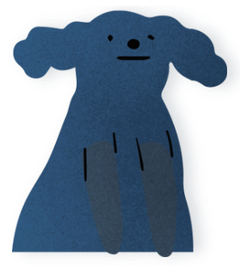

CSS 속성을 넣어주세요!
CSS 속성 검색하기
검색하기
align-content
align-items
align-self
all
animation
animation-delay
animation-direction
animation-duration
animation-fill-mode
animation-iteration-count
animation-name
animation-play-state
animation-timing-function
backface-visibility
background 속성은 백그라운드 속성을 일괄적으로 설정합니다.
background-attachment 속성은 배경 이미지의 고정 여부를 설정합니다.
background-blend-mode 속성은 배경을 혼합했을 때의 상태를 설정합니다.
background-clip 속성은 백그라운드 이미지의 위치 기준점을 설정합니다.
background-color 속성은 백그라운드 색을 설정합니다
background-image 속성은 백그라운드 이미지 및 배경 속성을 설정합니다.
background-origin 속성은 백그라운드 이미지의 위치 기준을 설정합니다.
background-position 속성은 백그라운드 이미지의 위치 영역을 설정합니다.
background-repeat 속성은 백그라운드 이미지의 반복여부를 설정합니다.
background-size 속성은 백그라운드 이미지의 사이즈를 설정합니다.
dorder 속성은 테두리 속성을 일괄적으로 설정합니다.
border-bottom 속성은 테두리 아래쪽 속성을 일괄적으로 설정합니다.
border-bottom-color 속성은 테두리 아래쪽 색 속성을 설정합니다.
border-bottom-left-radius 속성은 아래부분 왼쪽 모서리 굴곡을 설정합니다.
border-bottom-left-radius 속성은 아래부분 오른쪽 모서리 굴곡을 설정합니다.
border-bottom-style 속성은 테두리 아래쪽 스타일 속성을 설정합니다.
border-bottom-width 속성은 테두리 아래쪽 두께 속성을 설정합니다.
border-collapse 속성은 테이블의 테두리 분리 여부를 설정합니다.
border-color 속성은 테두리 색 속성을 설정합니다.
border-image
border-image-outset
border-image-repeat
border-image-slice
border-image-source
border-image-width
border-left 속성은 테두리 왼쪽 속성을 일괄적으로 설정합니다.
border-left-color 속성은 테두리 왼쪽 색 속성을 설정합니다.
border-left-style 속성은 테두리 왼쪽 스타일 속성을 설정합니다.
border-left-width 속성은 테두리 왼쪽 두께 속성을 설정합니다.
border-radius 속성은 모서리 굴곡을 설정합니다.
border-right 속성은 테두리 오른쪽 속성을 일괄적으로 설정합니다.
border-right-color 속성은 테두리 오른쪽 색 속성을 설정합니다.
border-right-style 속성은 테두리 오른쪽 스타일 속성을 설정합니다.
border-right-width 속성은 테두리 오른쪽 두께 속성을 설정합니다.
border-spacing 속성은 테이블의 테두리 간격을 설정합니다.
border-style 속성은 테두리 스타일 속성을 설정합니다.
border-top 속성은 테두리 위쪽 속성을 일괄적으로 설정합니다.
border-top-color 속성은 테두리 위쪽 색 속성을 설정합니다.
border-top-left-radius 속성은 윗부분 왼쪽 모서리 굴곡을 설정합니다.
border-top-right-radius 속성은 윗부분 오른쪽 모서리 굴곡을 설정합니다.
border-top-style 속성은 위쪽 테두리 스타일 속성을 설정합니다.
border-top-width 속성은 위쪽 테두리 두께 속성을 설정합니다.
border-width 속성은 테두리 두께 속성을 설정합니다.
bottom 속성은 위치 요소의 아래쪽 속성을 설정합니다.
box-decoration-break
box-shadow
box-sizing
caption-side
caret-color
clear 속성은 float 요소의 성질을 제거를 설정합니다.
clip
color 속성은 글씨 색을 설정합니다.
column-count
column-fill
column-gap
column-rule
column-rule-color
column-rule-style
column-rule-width
column-span
column-width
columns
content
counter-increment
counter-reset
cursor
direction
display 속성은 요소의 성질을 설정합니다.
empty-cells
filter
flex
flex-basis
flex-direction
flex-flow
flex-grow
flex-shrink
flex-wrap
float 속성은 정렬 상태를 설정합니다.
font 속성은 폰트의 속성을 일괄적을 설정합니다.
font-family 속성은 폰트 종류를 설정합니다.
font-size 속성은 폰트 크기를 설정합니다.
font-size-adjust
font-stretch
font-style 폰트 스타일을 설정합니다.
font-variant
font-weight 속성은 폰트 두께를 설정합니다.
grid
grid-area
grid-auto-columns
grid-auto-flow
grid-auto-rows
grid-column
grid-column-end
grid-column-gap
grid-column-start
grid-gap
grid-row
grid-row-end
grid-row-gap
grid-row-start
grid-template
grid-template-areas
grid-template-columns
grid-template-rows
hanging-punctuation
height
hyphens
isolation
justify-content
left
letter-spacing
line-height
list-style
list-style-image
list-style-position
list-style-type
margin
margin-bottom
margin-left
margin-right
margin-top
max-height
max-width
min-height
min-width
mix-blend-mode
object-fit
object-position
opacity
order
outline
outline-color
outline-offset
outline-style
outline-width
overflow
overflow-x
overflow-y
padding
padding-bottom
padding-left
padding-right
padding-top
page-break-after
page-break-before
page-break-inside
perspective
perspective-origin
pointer-events
position
quotes
resize
right
tab-size
table-layout
text-align
text-align-last
text-decoration
text-decoration-color
text-decoration-line
text-decoration-style
text-indent
text-justify
text-overflow
text-shadow
text-transform
top
transform
transform-origin
transform-style
transition
transition-delay
transition-duration
transition-property
transition-timing-function
unicode-bidi
user-select
vertical-align
visibility
white-space
width
word-break
word-spacing
word-wrap
z-index
